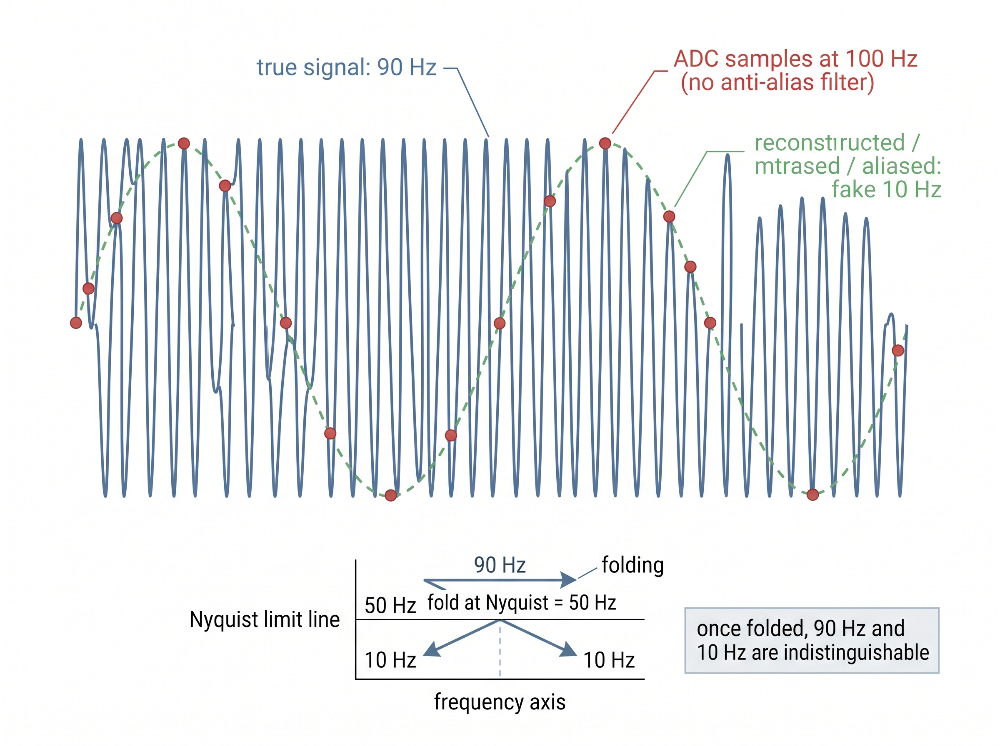

"Nobody ever hands me a decision. They hand me a voltage and a deadline, and expect the rest to appear."
A Slightly Overworked AI Agent
The big picture
Section 1.4 laid out the static kinds of sensor and task. This section is about motion: what actually happens, in order, between the instant a physical quantity nudges a transducer and the instant a machine commits to an action. That ordered pipeline, the sensing chain, is the process spine of this entire book. Every later Part is one link in it, taught in depth. The chain also carries a hard lesson that sets the book's priorities: errors and delay accumulate strictly downstream, so a defect introduced early (a bad calibration, an aliased sample) can never be undone later, no matter how sophisticated the model that inherits it. That single fact is why we spend Part I getting measurement right before we let a neural network anywhere near the data.
You are handed a voltage \(x(t)\) and a deadline. Somewhere behind that voltage is a hidden physical state \(s\) you actually care about: a heart rhythm, a bearing about to fail, a pedestrian stepping off a curb. The measurement model from Section 1.3, \(x = h(s) + \eta\), says the sensor gives you \(s\) only through its own response \(h(\cdot)\) and its own noise \(\eta\). The job of the chain is to invert that relationship well enough, fast enough, to produce a trustworthy estimate \(\hat{s}\) and an action \(a\) before the deadline passes. What follows walks one measurement through all eight stages. The figure and table below name all eight in order, and the prose then dwells on the two earliest, conditioning and sampling, because that is where the chain's errors and delays first become permanent.
The eight stages, and the verb each one serves
The chain has eight links. Each maps to one of the book's six verbs (measure, clean, represent, infer, fuse, deploy) and to the Part that teaches it. Read the boxes in the diagram below left to right, then read the table as its legend; every row names a stage, the verb it advances, what enters and leaves it, and where in the book it lives.
| Stage | Verb | In → out | Taught in |
|---|---|---|---|
| transduce | measure | physical \(s\) → analog \(x(t)\) | Ch 2, Sensor physics |
| condition | clean | \(x(t)\) → filtered, anti-aliased \(x(t)\) | Part II, Ch 6 |
| sample | measure / clean | \(x(t)\) → discrete \(x[n]\) | Ch 3, Sampling |
| represent | represent | \(x[n]\) → features / embedding \(z\) | Parts II & IV |
| infer | infer | \(z\) → estimate \(\hat{s}\), event \(e\) | Parts III & IV |
| fuse | fuse | many \(\hat{s}_m\) → one \(\hat{s}\) | Part X, Ch 48 |
| decide | deploy | \(\hat{s}\) → action choice \(a\) | Part XIII |
| act | deploy | \(a\) → actuation / alert | Part XII, Ch 59 |
Two stages deserve a pause, because beginners routinely skip them. Conditioning is the analog work before digitization: amplification, anti-alias filtering, and range matching. Sampling then turns the continuous \(x(t)\) into the discrete sequence \(x[n]\) that everything digital consumes. Neither is glamorous, yet both are where the most expensive mistakes happen, because they are the last places the true continuous signal still exists. Sample badly and it is gone for good.
Checkpoint
So far: the sensing chain is eight ordered stages; conditioning is the analog cleanup applied before digitization, and sampling converts the continuous signal into the discrete sequence \(x[n]\) that every later stage consumes.
Set this stage wrong and the failure is both spectacular and permanent: a wrist wearable that cries wolf a dozen times a day, or a bearing monitor that certifies a failing machine as healthy, with no downstream retraining run able to rescue either. That is what is at stake in the two unglamorous paragraphs of analog work below. Conditioning, precisely, is the set of analog operations applied to \(x(t)\) while it is still a continuous voltage: a gain stage that scales the signal's amplitude to match the converter's input range, and a low-pass anti-alias filter that removes energy above the Nyquist frequency (half the sampling rate, the highest frequency a given sample rate can faithfully represent) before the sampler ever runs. The failure this guards against, aliasing, is the frequency folding demonstrated under "Why upstream flaws are unrecoverable" below. It matters because it is the last moment at which the true continuous waveform is physically present, so every choice made here sets a hard ceiling on the fidelity of everything digital that follows. Mechanically, the anti-alias filter attenuates out-of-band frequencies by passing the signal through a resistor-capacitor or active op-amp network whose gain rolls off above a chosen cutoff. Reach for analog conditioning whenever the converter has limited resolution or the sampling rate sits close to the signal's bandwidth; you can lean on a purely digital pipeline instead only when the transducer is already band-limited and the analog-to-digital converter (ADC) has generous headroom. In short: the sensing chain forgives nothing it was never handed, so every guarantee you want at the end has to be bought at the start.
Key insight
Information flows one way. Each stage either preserves or destroys information about \(s\); no stage can create it. If conditioning removes the frequency band that carried the heartbeat, no downstream transformer will bring it back, because the transformer never saw it. The conditioned observation \(y\) is a strict bottleneck: the best possible decision is bounded by what survived into \(y\), so quality lost early is a permanent ceiling on everything that follows. This is the data-processing inequality (the result that no processing step can increase, only preserve or reduce, the information a signal carries about its source) wearing work boots.
Mental Model
Think of the chain as a run of photocopies where each machine can only copy the page it is physically handed. The first copy is made from the original document, the second from that first copy, the third from the second, and on down the line. A smudge that lands on copy two is faithfully reproduced on every later copy, and no downstream machine can consult the original to remove it, because the original left the room after the first pass. A copier can sharpen contrast or crop the margins, but it can never restore ink that an earlier copy already dropped. The conditioned observation \(y\) is that early copy: whatever it lost becomes the permanent ceiling on legibility for the entire stack behind it.
Why upstream flaws are unrecoverable
Aliasing is the cleanest example of an irreversible upstream flaw, so it is worth stating concretely. Suppose a bearing vibrates at 90 Hz and you sample at 100 Hz without an anti-alias filter. The Nyquist limit is 50 Hz, so the 90 Hz tone folds down and appears in \(x[n]\) as a perfectly convincing 10 Hz tone. Nothing in the sampled data separates the aliased 90 Hz from a genuine 10 Hz tone: both trace out the same 10 Hz sinusoid, and although they differ by a sign, they share an identical spectral magnitude, so any magnitude-based feature reads them as one tone. A downstream model that flags "10 Hz means healthy" will confidently clear a machine that is actually screaming at 90 Hz. The fix does not live downstream. It lives in the conditioning stage, in an analog low-pass filter that had to run before the sampler, once, and cannot be retrofitted afterward. Chapter 3 (Signals, Sampling, Time, and Synchronization) develops the sampling theorem that makes this precise. Figure 1.5.2 illustrates aliasing: a 90 Hz tone folding into a fake 10 Hz sinusoid under undersampling.

Step-Through: how a 90 Hz tone folds to a fake 10 Hz
Trace the sampling stage with real numbers. The true analog signal is \(x(t) = \sin(2\pi \cdot 90 \cdot t)\), a 90 Hz tone. The ADC runs at 100 Hz with no anti-alias filter, so it grabs one value every \(0.01\) s at times \(t = n/100\). Each captured value is \(\sin(2\pi \cdot 90 \cdot n/100) = \sin(1.8\pi n)\). Evaluating for the first eleven samples:
n = 0 1 2 3 4 5 6 7 8 9 10
x[n] = 0.000, -0.588, -0.951, -0.951, -0.588, 0.000, +0.588, +0.951, +0.951, +0.588, 0.000
Read those eleven numbers as a wave: they rise and fall through exactly one full cycle across 10 samples. Ten samples at 100 Hz spans \(0.1\) s, so the sampled sequence is a clean 10 Hz sinusoid. Now compare against a genuine 10 Hz tone sampled the same way, \(\sin(2\pi \cdot 10 \cdot n/100) = \sin(0.2\pi n)\): its samples are \(0.000, +0.588, +0.951, \ldots\), identical in magnitude and differing only by a sign (a 180 degree phase shift). Any feature that keys on spectral magnitude, a common choice, sees two spectrally indistinguishable 10 Hz sequences. The 90 Hz truth was destroyed at the sample stage; the numbers that reach infer no longer contain it.
Common Misconception
The misconception is that a sufficiently powerful model can compensate for poor upstream measurement, the "collect the data now, we will fix it with deep learning later" reflex. A network can only relate the inputs it actually receives to labels; if the distinguishing information was destroyed before digitization, no architecture, loss function, or quantity of training data can reconstruct what was never recorded. Pouring more model capacity onto corrupted data buys you a more confident wrong answer, not a recovered signal.
The same one-way logic governs errors in general. Model a small error \(\delta\) injected at some stage. Every later stage applies its own transform, so by the time the error reaches the decision it has been stretched or compressed but never erased. A miscalibrated bias in \(h(\cdot)\) at transduction propagates as a constant offset through conditioning, survives sampling untouched, and reappears as a shifted decision boundary at the end. This is why we treat calibration and leakage-safe data handling as first-class engineering, not afterthoughts. Chapter 5 (Sensor Data Engineering and Leakage-Safe Datasets) shows how a subtle upstream mistake, normalizing with statistics computed over the test window, silently poisons every metric downstream.
In practice: a wearable fall detector on a tight budget
A wrist wearable must decide, within 50 ms of a fall, whether to raise an SOS. The accelerometer transduces limb motion into \(x(t)\); an analog low-pass conditions it; the ADC samples at 50 Hz into \(x[n]\); a short-window feature extractor builds \(z\); a small temporal model infers the event \(e\); a fusion step reconciles the accelerometer with the barometer's altitude drop; a policy decides; the radio acts by paging a caregiver. Early in development the team shipped a firmware build that set the anti-alias cutoff too high. High-frequency wrist tremor aliased into the 3 to 5 Hz band that the fall model keyed on, and false alarms tripled in the field. No amount of retraining the model helped, because the corrupted band was baked into the recorded data. The repair was a single line in the sensor's register configuration, upstream of everything the data scientists had touched.
Real-World Application: industrial predictive maintenance
Augury, a machine-health platform bolted onto pumps, motors, and compressors in food and pharma plants, lives or dies on the upstream stages of this exact chain. Its vibration nodes anti-alias and sample the casing at rates chosen to keep bearing and gear-mesh tones below Nyquist, precisely so that a fault frequency never folds into a healthy band before the diagnosis model ever sees it. The lesson of this section is their product spec: the anti-alias filter and sampling rate are fixed in the sensor node's firmware, upstream of the cloud model, because no amount of downstream machine learning can recover a fault tone that was aliased away at capture.
Latency budgets accumulate down the chain
Error is not the only quantity that piles up as a measurement travels down the chain; time accumulates the same way, and it is just as unforgiving of the stages upstream. The deadline in the epigraph is not decoration. Each stage costs time, and end-to-end latency is the plain sum of per-stage latencies, not the maximum. A 12 ms model is affordable only if the seven other stages leave room for it under the deadline. Because the costs add, a chain can miss its deadline even when no single stage looks slow. That is exactly the failure that surprises teams who profile stages in isolation. The short program below tabulates a per-stage latency budget for the fall detector and checks the accumulated total against the 50 ms deadline. The running cumulative column is the number that actually has to clear the deadline.
import numpy as np
stages = ["transduce", "condition", "sample", "represent",
"infer", "fuse", "decide", "act"]
latency_ms = np.array([0.2, 1.5, 20.0, 3.0, 12.0, 4.0, 0.5, 8.0])
cumulative = np.cumsum(latency_ms) # time at which each stage completes
end_to_end = cumulative[-1]
deadline_ms = 50.0
for name, done_at in zip(stages, cumulative):
print(f"{name:<11} done at {done_at:6.1f} ms")
verdict = "MET" if end_to_end <= deadline_ms else "MISSED"
print(f"end-to-end: {end_to_end:.1f} ms (deadline {deadline_ms:.0f} ms) -> {verdict}")
Notice that sampling, at 20 ms, dominates: to observe a full motion cycle the window has to be long, and the deadline clock runs the whole time it fills. The sampling window alone costs 20 ms, more than the 12 ms neural network that teams instinctively rush to shrink first. This is the tension that Chapter 59 (Edge AI Fundamentals and Model Optimization) exists to resolve, and it is why shrinking the model is often the wrong optimization: the budget was spent upstream. Fusion, the reconciliation of the accelerometer and barometer estimates, adds its own 4 ms and its own failure modes; the principled way to combine noisy estimates without double-counting evidence is the subject of Chapter 48 (Foundations of Sensor Fusion).
Research Frontier
This section teaches hand-designed feature extraction feeding a task-specific model, but a 2024 line of work collapses both into pre-trained sensor foundation models. MOMENT (Goswami et al., ICML 2024) trains a single transformer on a large multi-domain corpus of time series and then serves the represent and infer stages for forecasting, classification, imputation, and anomaly detection with little or no task-specific training; Chronos (Ansari et al., 2024) reaches a similar result by tokenizing signal values and reusing a language-model backbone. As of 2025 the direction had broadened further, with time-series foundation models such as TimesFM (Das et al., Google) and Moirai (Woo et al.) extending zero-shot forecasting, and faster distilled variants (for example Chronos-Bolt) cutting inference cost, though none of them changes the argument here. These systems lift the ceiling on the represent and infer links, yet they do not repeal the data-processing inequality: a foundation model still inherits whatever the conditioning and sampling stages already discarded, which keeps the upstream discipline of this section firmly in force.
Right tool: don't hand-roll the sampler
The conditioning-plus-sampling step is exactly where beginners write a bug. Downsampling by naive subsampling (x[::5]) aliases, because it skips the anti-alias filter. Building the filter and the decimation (downsampling together with the anti-alias filtering that must precede it) by hand is roughly a dozen lines (design a low-pass, apply it forward and backward, then subsample). A modern library does the whole thing correctly in one call:
from scipy.signal import decimate
x_ds = decimate(x, q=5, ftype="iir", zero_phase=True) # anti-aliased 250 Hz -> 50 Hzscipy.signal.decimate call with zero_phase=True designs the low-pass, filters forward and backward, and subsamples 250 Hz down to 50 Hz in the correct order, so the anti-alias step can never be skipped the way a bare x[::5] would skip it.That single line replaces about 12 lines and, more importantly, applies the anti-alias filter for you so the irreversible mistake from the previous section cannot happen. It internally designs the low-pass, runs it with zero phase distortion, and then subsamples in the right order.
Fun note
The chain is unforgiving in a very human way: it will happily let you spend three weeks tuning the last stage to claw back accuracy that a single wrongly-set register threw away in the first microsecond. The voltage does not care how good your transformer is.
Exercise
Take the latency budget in Listing 1.5.1 and a product manager who wants the deadline cut to 40 ms. (a) Which single stage would you attack first, and why is it not the 12 ms inference stage? (b) If you halve the sampling window to 10 ms, what physical property of the fall signal might you now fail to observe, and how would that show up two stages later at inference? (c) Argue in two sentences why a 40 ms deadline might force a different architecture for the chain rather than a faster version of the same one.
Self-check
- Explain, using the measurement model \(x = h(s) + \eta\), why a calibration error in \(h(\cdot)\) cannot be corrected by any purely downstream model.
- A colleague proposes fixing field aliasing by adding a digital low-pass filter after the ADC. Why does this not work, and where must the filter actually go?
- Two stages each take 8 ms. Why is the combined contribution to the end-to-end budget 16 ms and not 8 ms, and when would the maximum (not the sum) be the right model instead?
Try It: Watch a 90 Hz tone masquerade as 10 Hz
Reproduce this section's aliasing failure on your laptop with NumPy, SciPy, and Matplotlib in about fifteen lines.
- Synthesize a "true" analog signal: build a 90 Hz sine sampled finely at 5000 Hz for one second with
t = np.arange(0, 1, 1/5000)andx = np.sin(2*np.pi*90*t). - Sample it badly: keep every 50th value with
x_bad = x[::50]and its time axist_bad = t[::50], emulating a 100 Hz ADC that has no anti-alias filter. - Overlay
plt.plot(t, x)withplt.scatter(t_bad, x_bad)and confirm by eye that the sampled points trace a slow 10 Hz wave, not the real 90 Hz one. - Do it correctly: call
x_ds = scipy.signal.decimate(x, q=50, ftype="iir", zero_phase=True), then inspectnp.abs(np.fft.rfft(x_ds))and verify the 90 Hz energy was filtered out rather than folded down to 10 Hz. - Change the true frequency to 40 Hz (below the 50 Hz Nyquist limit) and repeat step 2 to confirm that a legitimate in-band tone survives even naive subsampling intact.
Lab: prove that a downstream model cannot rescue a badly sampled upstream
Goal. Show empirically that classifier accuracy lost to naive downsampling is permanent, while anti-aliased downsampling to the same rate preserves it. This turns the section's one-way-information claim into a number you measure yourself in 15 to 30 minutes.
Tools. Python with numpy, scipy.signal, and scikit-learn, plus the UCI "Human Activity Recognition Using Smartphones" dataset (50 Hz tri-axial accelerometer, six activities). If the download is inconvenient, substitute any labeled accelerometer set, or synthesize class tones near the Nyquist edge.
Procedure. Load the 50 Hz raw inertial signals and hold out a test split. Build three versions of the input at an effective 10 Hz: (1) the full-rate baseline, (2) naive subsampling with x[::5], and (3) anti-aliased decimation with scipy.signal.decimate(x, q=5, ftype="iir", zero_phase=True). Extract the same simple features from each (band-power in a few frequency bins works well) and fit the same small classifier, for example sklearn.ensemble.RandomForestClassifier, on each version.
What to vary. The decimation factor q (try 2, 5, and 10) and, as a stress test, add a synthetic tremor tone just above each version's Nyquist limit before downsampling.
What to observe. Test accuracy for the naive-subsampled input should sit measurably below the anti-aliased input at the identical sample rate, and the gap should widen as q grows and as the injected tone climbs past Nyquist. Confirm the key point: retraining, more trees, or more features never closes the naive-subsampling gap, because the discriminative energy was folded into the wrong band before the model ever ran. Now feed the anti-aliased stream to the same untouched model and watch the accuracy return.
What's Next
The chain in this section quietly assumed we could afford each stage. In Section 1.6, we promote the constraints themselves to first-class citizens: sampling rate, latency, bandwidth, power, cost, and privacy are not afterthoughts to optimize once the model works, but design axes that shape which chain is even buildable on a coin-cell wearable or a bandwidth-starved remote sensor.